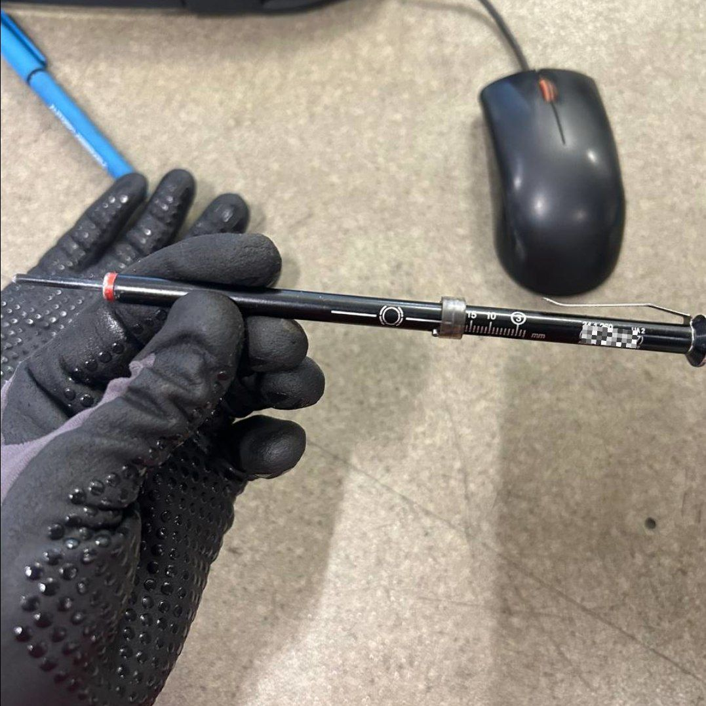

Home / Brakes and suspension
BMW Brake Pad Wear: How to Measure Thickness
Quick answer
In the workshop I measure pad thickness with a small depth gauge that goes into the holes in the pad. A new pad starts at roughly 10 mm, and a common rule of thumb is to replace pads at around 3 mm, sooner if the wear sensor has triggered a warning. Measure all four wheels, and check the rotors at the same time.

Why measure instead of waiting for the warning
Many modern BMWs have a pad wear sensor that triggers a warning on the dashboard, but that warning comes late, and it tells you nothing about how evenly the pads are wearing. Measuring takes a minute and shows you how much is left.
How I measure
I use a small depth gauge like the one in the photo. The pads I measure have small holes in the friction material. The gauge goes into a hole and shows how much material is left, in millimeters.
- Measure each pad, inner and outer, on all four wheels.
- Write down the smallest reading at each wheel.
- Compare the readings. Uneven wear can point to a sticking slide pin or caliper.
- Look at the rotor surface at the same time.
When to replace
| Friction material left | What it means |
|---|---|
| About 10 mm | A new pad |
| About 3 mm | A common rule of thumb: plan the replacement |
| About 2 mm | Many sources treat this as the point where replacement is necessary |
| Below that, or a warning on the dashboard | Replace now |
These are general figures. Your car's service information gives the manufacturer's limit, so use that when it differs.
The wear sensor
Many BMWs have an electronic wear sensor in the pad that triggers a warning when the pad is near its limit. It is good practice to replace the sensor with the pads, even if it hasn't triggered.
What else to check
- Rotors: look for deep grooves, a lip at the edge or heat marks
- Slide pins and caliper: uneven wear is the usual sign they are stuck
- Brake fluid: old fluid affects pedal feel. See BMW Brake Fluid Change
- Front vs rear: front pads usually wear faster
Safety note. Brakes are a safety system. If the pedal feels soft or the car pulls to one side, have it checked before you drive.
FAQ
When should I replace BMW brake pads?
A common rule of thumb is around 3 mm of friction material, and sooner if the wear warning appears. Check the limit in your service information.
Can brake pads last 100,000 miles?
Some drivers get a very long life, depending on the car and driving style. Measure rather than guessing.
How do I check the pads without taking the wheel off?
You can look through the wheel spokes, but measuring with a gauge is more reliable.
Does the wear sensor warning mean I must replace the pads now?
Plan the replacement soon. The warning means the pads are near their limit.
Do I replace the wear sensor with the pads?
It is good practice to do so, even if it hasn't triggered.
This guide is general information based on personal experience, not professional advice. Check your own car's manual for exact specs and read the disclaimer before starting any job.